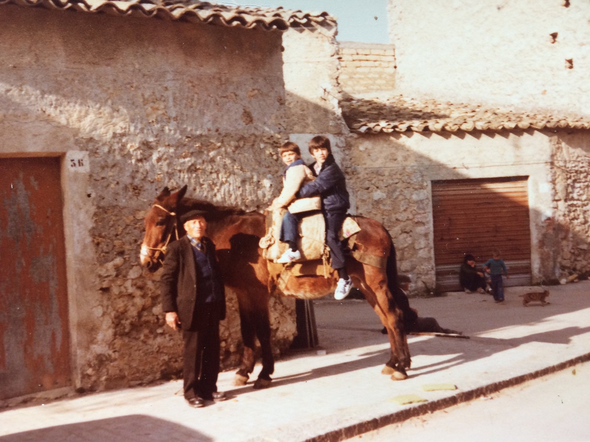

Pietro Agro
This site is dedicated to my grandfather, who farmed in Sicily for most of his life.
As an Amazon Associate this site earns from qualifying purchases. Links to products may be affiliate links. This costs you nothing extra and does not change what gets recommended. Nothing here is medical advice.
This site is dedicated to my grandfather, Pietro Agro, who was a farmer in Sicily for most of his life.

Castrofilippo, Sicily, 1979. He is the man in the cap, holding the mule. The two of us up on the pack saddle are my brother Louis and me. I am the older one, at the front, holding the reins.
Louis and my grandfather are both gone now. This photograph is the only place the three of us are still standing in the same street on the same morning, which is most of why it is on a website rather than in a drawer.
Louis was not a farmer. Neither am I. That is close to the point of this page. The work stopped being necessary in one generation and became a choice in the next, and everything on this site had to be picked back up deliberately by people who were handed it and put it down.
I have thought about that morning since. The boy holding the reins grew up and built a site explaining how to keep cabbage under brine and why grain stores better than flour. My grandfather needed none of it explained. He was walking it up the hill while the two of us sat on top of the load.
Why his name is on it
The site is called agrosuperfood because Agro is the family name. Pietro in Sicily, Peter a generation later and an ocean away. The name travelled and the work travelled with it, which is more or less what a family is.
He would have found the word superfood funny. What this site calls sprouting, fermenting, drying, and milling, he called Tuesday. None of it was a wellness practice. It was how a household ate through a winter using what a season had already given it, and how nothing that could be kept was allowed to be wasted.
Every subject on this site was ordinary knowledge in that house and had to be looked up again by the boys on the mule. Two percent salt and a weight on the cabbage. Grain stored whole because flour does not keep. Fruit dried on a tray because a glut in September is a jar in February. A mule loaded because the work was up the hill and someone had to carry it.
What he would have thought of the equipment
Probably not much.
There is a dehydrator on this site that costs real money and does what a hot afternoon and a clean cloth did for several thousand years. There is a mill with a warranty. There is a jar with a silicone airlock valve for a job a saucer and a stone used to do perfectly well.
That is not an argument against any of it. The machines are genuinely good, they make the work fit around a job and a family, and they are why these practices are available to people who did not grow up with them. But it is worth saying plainly on the page with his photograph on it: none of this is new, none of it was invented by anyone selling it, and the knowledge is older than every brand named anywhere on this site.
The honest part
He did this because it was necessary. We do it because it is interesting, and because the food is better, and because there is something in it that a supermarket does not sell.
That is a real difference and not a shameful one. A choice is not a lesser thing than a necessity. It is only worth remembering which one you are making, and who was making the other.
Everything here is written to be used. That would have mattered to him more than anything else about it.
Corrections welcome
The place and the year I have: Castrofilippo, 1979. What I do not have is the mule's name, and I would like it.
If you knew him, or knew us, and something here is wrong, tell me and I will change it. Some things are worth getting right.